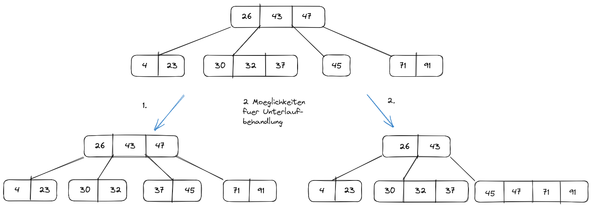
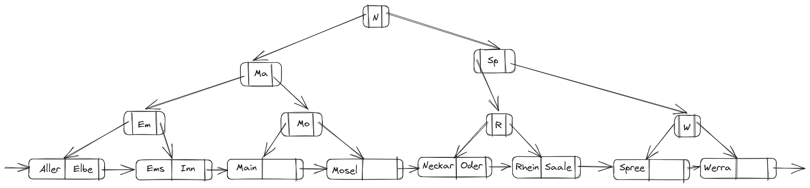

select current_setting('block_size');| current_setting |
|---|
| 8192 |
Satzlaenge twitter_user
| Attribute | Typ | Satzlaenge |
|---|---|---|
id |
bigint |
8 byte |
follower_count |
integer |
4 byte |
tweet_count |
integer |
4 byte |
typ |
char(11)/char(5) “politician”/“lobby” |
12 byte (1 byte Overhead) |
created_at |
timestamp |
8 byte |
twitter_name |
text |
12 byte |
real_name |
text |
18 byte |
| — | — | — |
| \(\sum\) | 54 byte |
Speicherplatz der Header
D.h. jedes Tupel hat 54 Byte Nutzdaten + 23 Byte Header = 77 Byte.
Groesse der Bloecke im PostgreSQL:
select current_setting('block_size');| current_setting |
|---|
| 8192 |
select count(*)
from twitter_user| count |
|---|
| 1825 |
Anzahl der Tupel pro Seite ca.:
round(8192 / 77)[1] 106Somit ist die Anzahl der Seiten ungefaehr:
round(1825 / 106)[1] 17select relname, relpages
from pg_class
where relname = 'twitter_user'| relname | relpages |
|---|---|
| twitter_user | 22 |
Also in Wirklichkeit werden 22 Seiten gebraucht statt 17 Seiten. D.h. mehr Speicher. Die Gruende dieser Abweichung sind u.a. mehr Speicher fuer:


Punkte: 19.5/24.0
- A1: 5.0/8.0
- A2: 6.5/8.0
- A3: 8.0/8.0
Zur Aufgabe 1:
1. typ hat Länge 4, da enum => -0.5 P.
2. Tupel Header richtig, Attribut-Größe fehlt => -0.5 P.
3. So war die Aufgabe nicht gemeint, man sollte aus den Werten der 1. und 2. das Ausrechnen => -2 P.
4. Richtig
Zur Aufgabe 2:
1. Richtig 2. Beide Varianten nicht ganz richtig:
Grundstruktur teilweise richtig: Links sehr nah an ML man müsste nur 43 und 37 tauschen (der angesprochene Leichtsinnsfehler), rechts bei Löschen eines Nicht-Blattknotens wird Element durch (längen-)lexikographisch nächst kleineres Element ersetzt, in diesem Fall die 47. Ab dann ändert sich logischerweise auch euer Baum im Vergleich zur ML.
=> -1.5 P.
Zur Aufgabe 3:
1. Diese Woche war die ML falsch, deswegen habe ich hier einen Fehler beim Korrigieren gemacht. Nur Ma zu M wäre schön.
2. Habe ich übersehen, ist richtig.